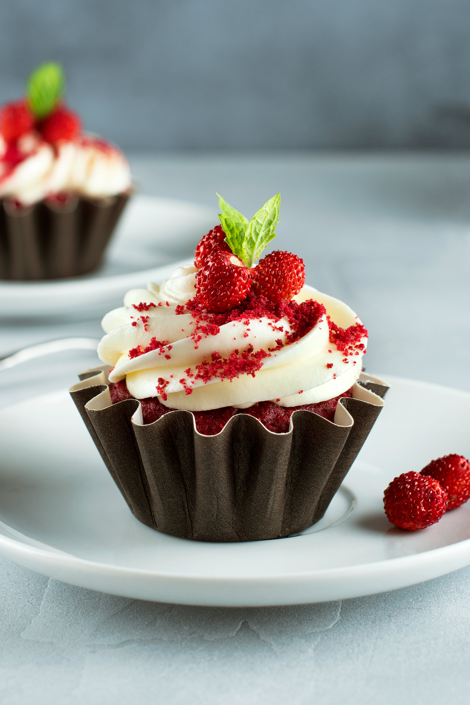
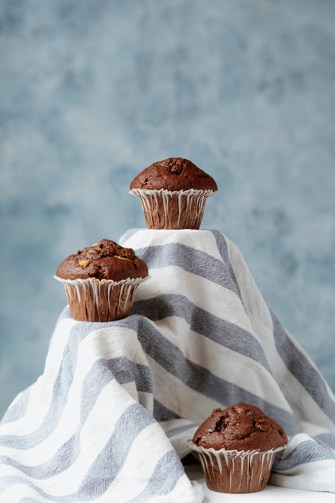
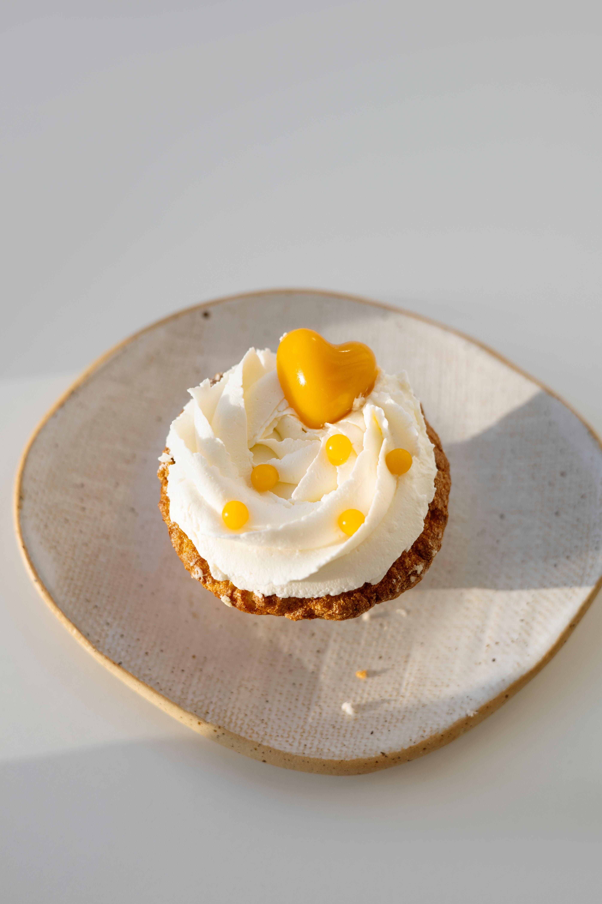
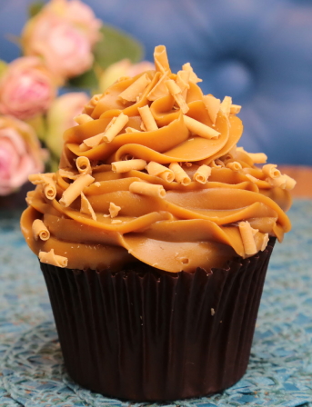

Cardápio
-

Cupcake de Morango
Este cupcake é uma explosão de sabor refrescante de morangos maduros. A base do bolo é macia e úmida, e o recheio é feito com um delicioso purê de morango, que adiciona um toque doce e frutado. A cobertura é decorada com um delicado glacê de morango e é coroada com um morango fresco, proporcionando um contraste agridoce que vai fazer sua boca se encher de água.
R$ 8,99 -

Cupcake de Chocolate
O cupcake de chocolate é uma escolha clássica para os amantes de chocolate. A base do bolo é rica e intensa, com um sabor profundo de cacau. No topo, você encontrará uma generosa camada de ganache de chocolate que derrete na boca, e para finalizar, lascas de chocolate ou confeitos podem ser adicionados para dar um toque extra de textura e sabor.
R$ 8,99 -

Cupcake de Baunilha
Um cupcake de baunilha é uma opção elegante e simples. A base do bolo é leve e macia, com uma nota suave de baunilha. A cobertura é feita com um cremoso glacê de baunilha que é delicadamente decorado com confeitos coloridos, tornando-o perfeito para qualquer ocasião.
R$ 7,99 -

Cupcake de Caramelo
O cupcake de caramelo é uma indulgência doce e reconfortante. A base do bolo tem um sabor de caramelo suave, e é recheado com um creme de caramelo pegajoso que flui no centro quando você o morde. A cobertura é generosamente coberta com um glacê de caramelo cremoso e pode ser decorada com flocos de sal marinho para um contraste saboroso.
R$ 7,99 -

Cupcake de Doce de Leite
Este cupcake é uma celebração do doce de leite, com uma base de bolo que possui um toque de doçura característico. O recheio é uma camada de doce de leite cremoso que adiciona uma textura rica e um sabor irresistível. A cobertura é coberta com mais doce de leite e pode ser decorada com um toque de canela em pó para realçar os sabores.
R$ 7,99
Resumo do Pedido
Total: R$ 0.00